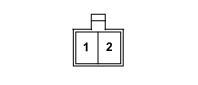

P036 SPEAKER IN PASSENGER FRONT DOOR (FRONT PASSENGER DOOR)
- Path
- Electrical equipment > 3 CONNECTORS > P VARIOUS CONSUMERS > P036 SPEAKER IN PASSENGER FRONT DOOR > P036 SPEAKER IN PASSENGER FRONT DOOR (FRONT PASSENGER DOOR)
- Kind
- connector pinout (pin -> wire colour -> other end)
- Applies to
- all engines; all production periods; only with equipment: Car Radio - HIGH
- Interactive page
- https://sloeber94.github.io/elrnDB-fPnd/en/#/169003570
Applies to: all engines; all production periods; only with equipment: Car Radio - HIGH

Wiring | Colour |
|---|---|
- |
Pin | Cable | Destination | |||
|---|---|---|---|---|---|
Sec.. | Colour | Node | Connect. | Pin | |
1 | 1,5 | SB (pink with white stripe) | X | 3 | |
10 | |||||
2 | 1,5 | NR (black with red stripe) | X | 2 | |
11 | |||||